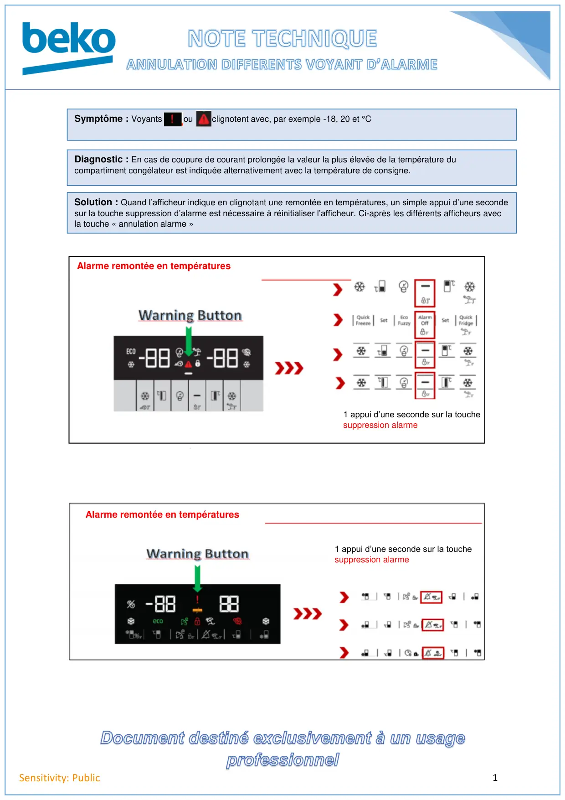
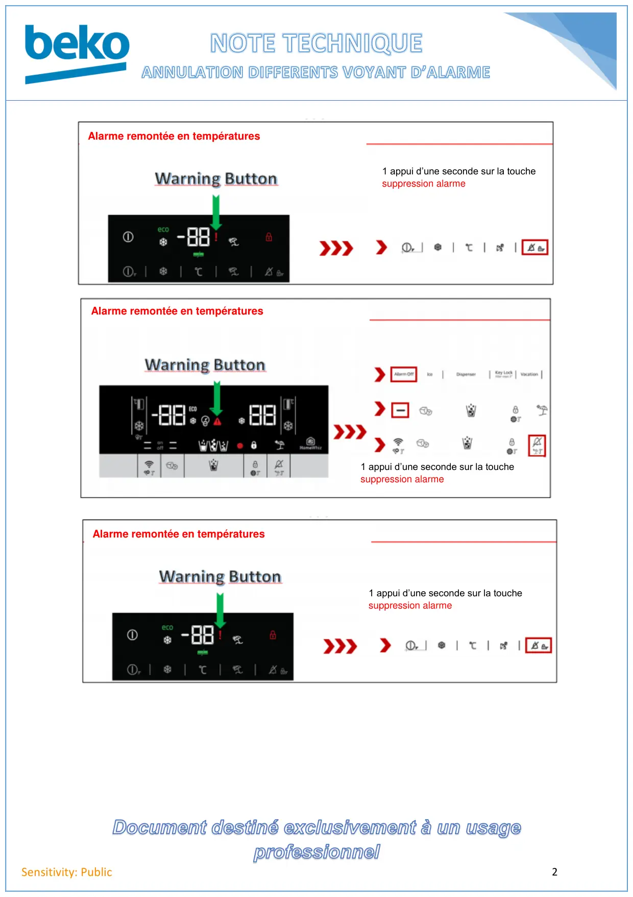
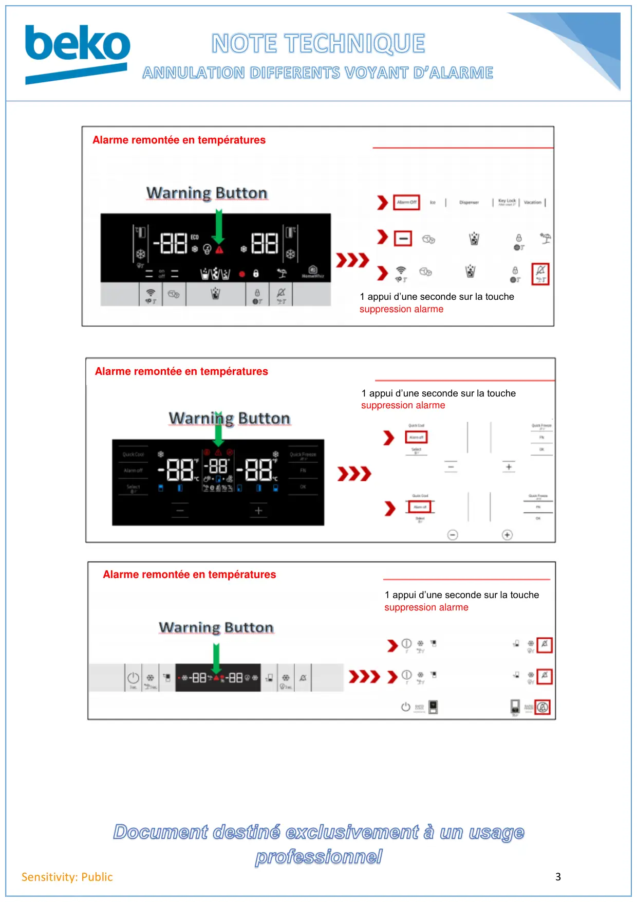
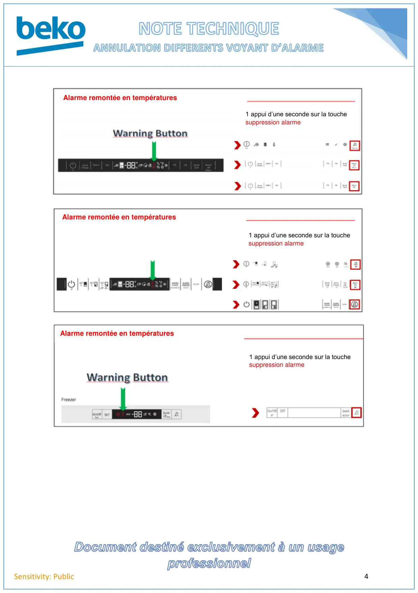
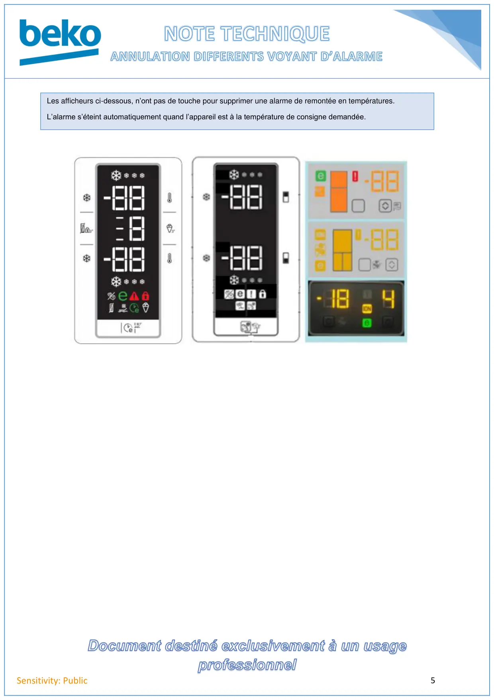

Différents voyants d'alarme remontée en températures

1Sensitivity: PublicSymptôme : Voyants ou clignotent avec, par exemple -18, 20 et °CDiagnostic : En cas de coupure de courant prolongée la valeur la plus élevée de la température ducompartiment congélateur est indiquée alternativement avec la température de consigne.Solution : Quand l’afficheur indique en clignotant une remontée en températures, un simple appui d’une secondesur la touche suppression d’alarme est nécessaire à réinitialiser l’afficheur. Ci-après les différents afficheurs avecla touche « annulation alarme »1 appui d’une seconde sur la touchesuppression alarmeAlarme remontée en températuresAlarme remontée en températures1 appui d’une seconde sur la touchesuppression alarme
1 / 5
2Sensitivity: PublicAlarme remontée en températures1 appui d’une seconde sur la touchesuppression alarmeAlarme remontée en températures1 appui d’une seconde sur la touchesuppression alarmeAlarme remontée en températures1 appui d’une seconde sur la touchesuppression alarme
2 / 5
3Sensitivity: PublicAlarme remontée en températures1 appui d’une seconde sur la touchesuppression alarmeAlarme remontée en températures1 appui d’une seconde sur la touchesuppression alarmeAlarme remontée en températures1 appui d’une seconde sur la touchesuppression alarme
3 / 5
4Sensitivity: PublicAlarme remontée en températures1 appui d’une seconde sur la touchesuppression alarmeAlarme remontée en températures1 appui d’une seconde sur la touchesuppression alarmeAlarme remontée en températures1 appui d’une seconde sur la touchesuppression alarme
4 / 5
5Sensitivity: PublicLes afficheurs ci-dessous, n’ont pas de touche pour supprimer une alarme de remontée en températures.L’alarme s’éteint automatiquement quand l’appareil est à la température de consigne demandée.
5 / 5